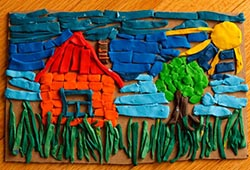

ေလ့က်င့္ ခန္း( ၁၂)

၁၂။ ရြံ႕ ေတြ ဂ်ံဳလံုး ေတြနဲ႕ ေဆာ့ ေပးပါ။
ရြံ႕၊ ဂ်ံဳနဲ႔ ေျမ ေတြ ေဘာလံုး ေတြ ျပဳလုပ္ ဖို႔ပါပဲ။
ကၽြမ္း က်င္ ရင္ ေတာ့ အ ေကာင္ ငယ္ ေလး ေတြ၊ အိမ္ ေတြ ဘာ ေတြ ပံုစံငယ္ ေလး ေတြ ျပဳလုပ္ ပါ။
ဒါမ်ိဳး ေတြ မၾကဳိက္ ရင္ လက္ ေခ်ာင္း ပန္း ခ်ီ ဆြဲၾကည့္ ပါ။